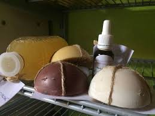

Florence Broueilh

Productrice de savons et de produits d'entretien pour le corprs ou la maison
-
coordinateur.rice :
- Romain
- savon
- Adresse : Carbon-Blanc
- Site : http://caravanesaveur.fr
- Commande : https://cagette.gourmandignes.org/contract/view/6
- contrat(s) :
Les savons de Florence sont réalisés avec la technique de saponification à froid
- maison
- cosmetique
- bio